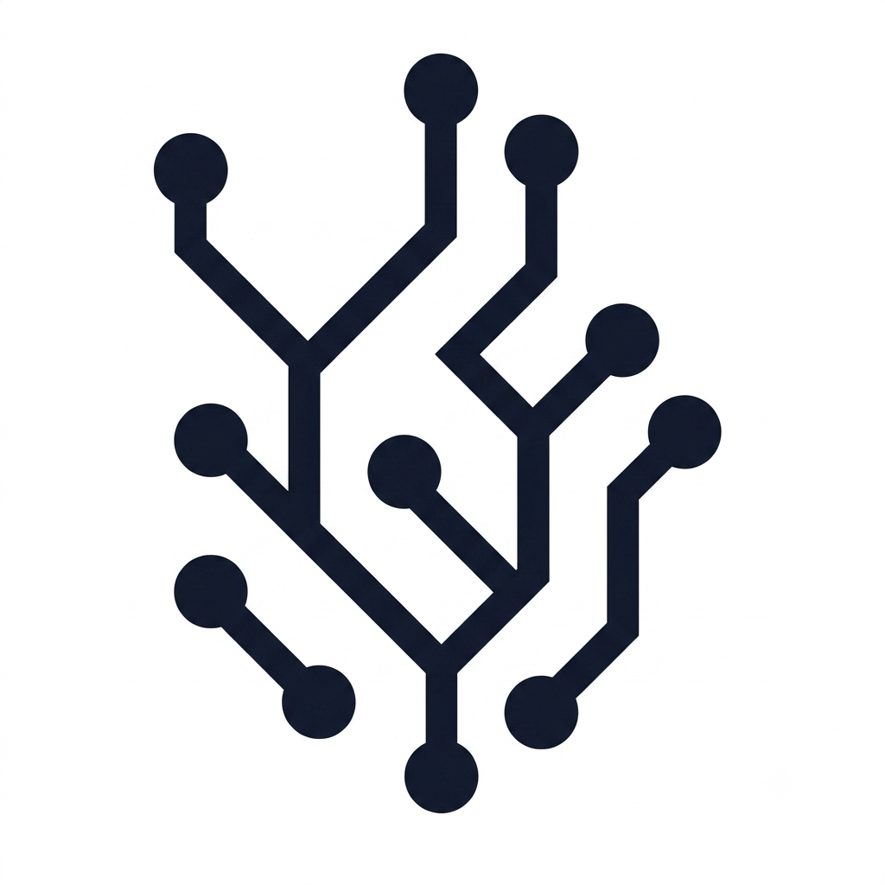
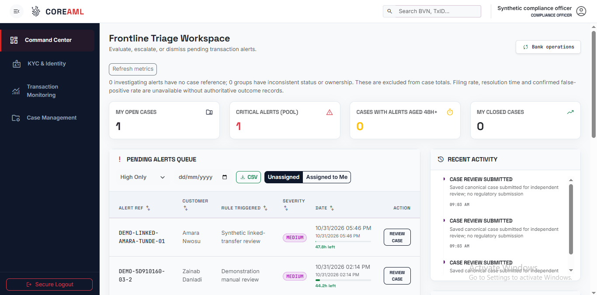
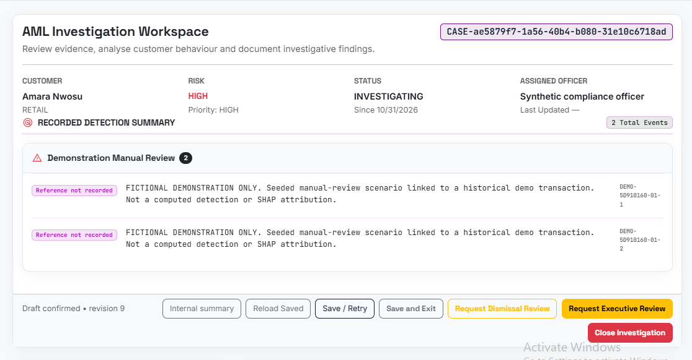

Detect suspicious activity
Automated transaction monitoring flags potentially suspicious activity and logs detection context for investigation.

COREAMLRequest a demoGive your compliance team a clearer path from an alert to an informed decision.
CoreAML combines automated detection, customer risk scoring and AI-assisted investigations—so your team can follow important signals through to an informed decision.

Connected investigations
Accountable reviews
Core banking integration
Keep the operational detail behind the scenes.
Bring the
information that matters into view.
Automated transaction monitoring flags potentially suspicious activity and logs detection context for investigation.
Customer risk scoring helps teams prioritize reviews alongside KYC verification and PEP/sanctions screening.
Connect customers, transactions and evidence, with AI-assisted reporting and SHAP explanations of model contributions.
Save findings, request independent review and retain the history behind each decision.
Automated detection flags activity for investigation; a customer risk score supports prioritization. An alert or elevated score is a reason to review the evidence, rather than a finding of wrongdoing.
AI helps prepare investigation reports from available case context. Officers review the generated narrative against the evidence before saving or submitting their findings.
SHAP shows how individual input features contribute to a model output, helping investigators understand the score. Contributions explain the model’s behaviour; they do not establish causation or prove suspicious conduct.
KYC and PEP/sanctions screening checks and country coverage depend on the configured provider and deployment. Screens below use fictional demonstration records; manually seeded examples are not live engine results.
Explore the workspace your team will use.
Screens shown with
fictional demonstration records.

Keep recorded detections, case ownership and saved findings together.
Five suspicious patterns involving ₦1 million each could represent ₦5 million in activity worth investigating. CoreAML helps teams connect the activity and examine the bigger picture.
Illustrative exposure calculator. Not a measured customer result or a savings guarantee.CoreAML is designed to work alongside your core banking application, connecting customer and transaction records with the compliance workflow.
We scope the connection around your APIs, data ownership and deployment requirements. Available connectors and country coverage are confirmed during discovery.
Discuss your integrationArchitecture illustration. Integration scope varies by deployment.
Access, evidence and review controls
are part of the
investigation workflow.
Institution-scoped records and role-based access help keep investigations within authorized teams.
Private document access and time-limited links support controlled review of sensitive records.
Saved case revisions, review feedback and workflow history help explain how a decision was reached.
CoreAML supports documented investigations and review workflows. Applicable regulations, reporting formats and deployment controls must be mapped and validated for your institution and jurisdiction. Software alone does not certify compliance.
Don’t have a core banking system? We provide our own simplified core banking application alongside CoreAML, supporting your customer, account and transaction journeys with one connected product team.
Explore core banking with usFunctionality, regulatory fit and implementation scope are confirmed during discovery.
Approved client stories and testimonials will appear here as they become available.
See the platform for yourselfTell us a little about your institution. We’ll use your enquiry to prepare a focused conversation about CoreAML, integration or core banking.